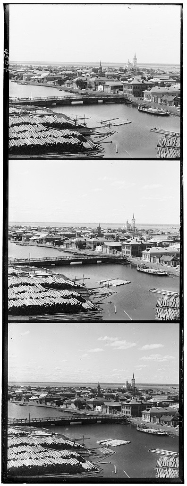
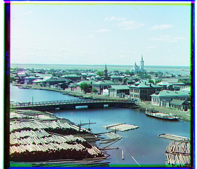
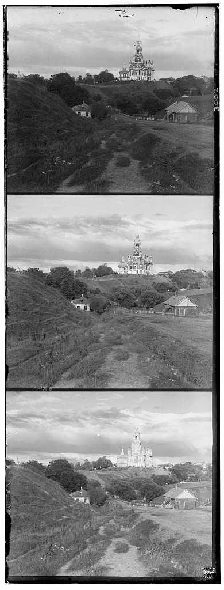
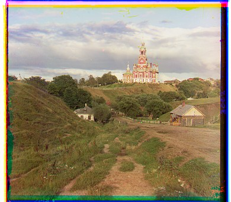
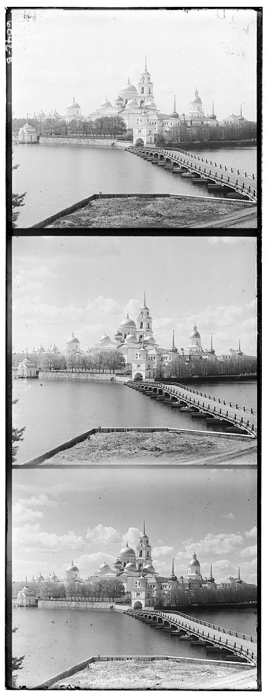
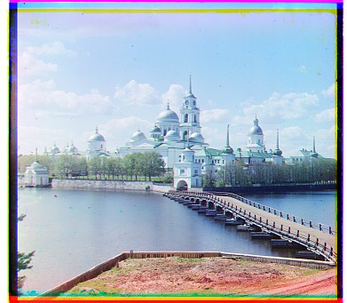
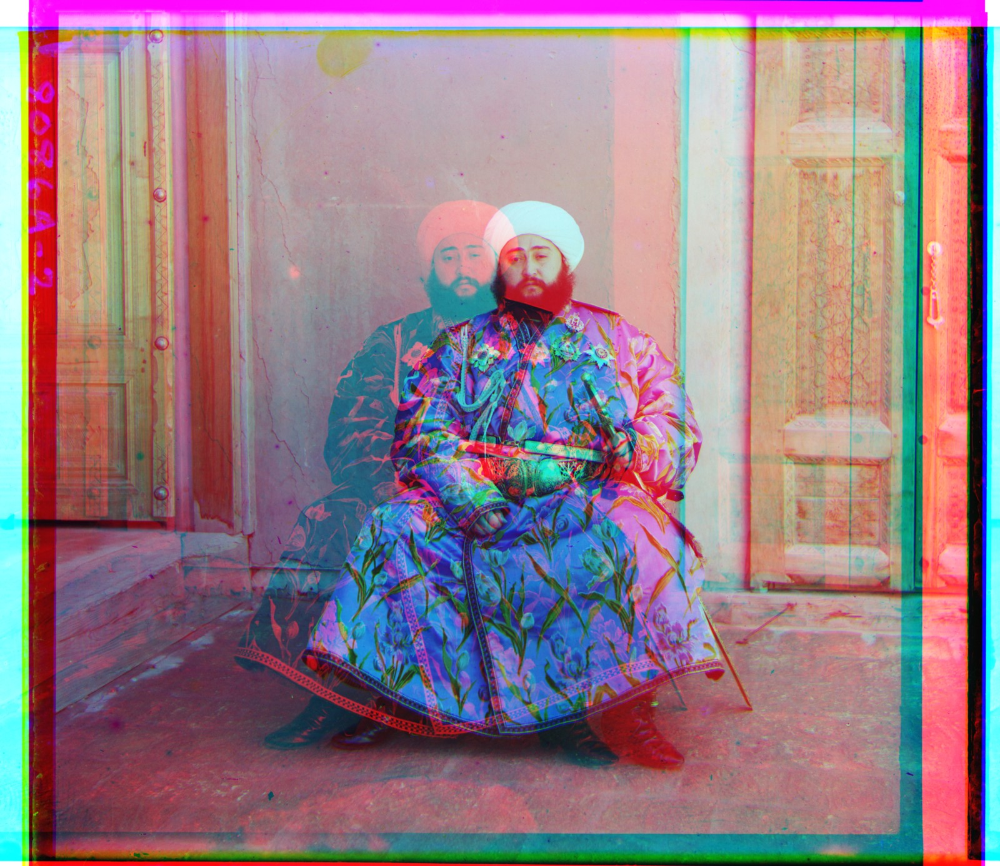
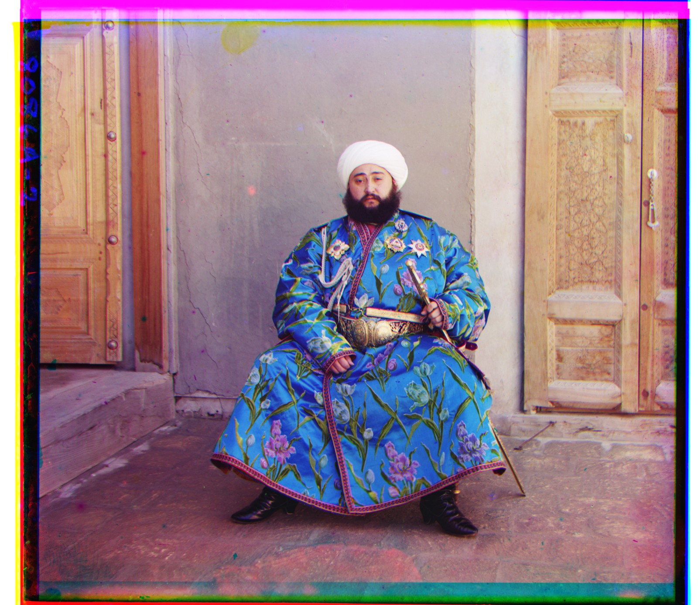

CS180 · Project 01 · Fall 2026 · Carl Djapardi
Aligning and Colorizing Images
The goal of this project is to reconstruct color photographs from Prokudin-Gorskii’s blue, green, and red grayscale exposures by automatically aligning the channels.
Here I present my approach through different techniques: naive single-scale alignment, pyramid alignment, and an edge-based extension.
Image Processing and Alignment Metric
I split each scan into three equal-height grayscale channels in B, G, R order. I keep blue fixed as the reference and align red and green to it independently. For each channel, I first find a vertical shift, then a horizontal shift, using np.roll. Finally, I stack the aligned channels in RGB order to produce the color image.
Scoring a candidate alignment
I score each candidate shift using mean-subtracted normalized cross-correlation (NCC). Subtracting each image’s mean removes its overall brightness, and dividing by the product of the image norms compensates for differences in contrast. A higher score means the patterns of light and dark match more closely, so I choose the shift with the highest score.
I compare only the interior of each channel, ignoring the outer 10% on every side so the scan borders have less influence on the score. This crop is used only for scoring; the output images retain the full frame.
Offsets are (dx, dy) in original-resolution pixels relative to blue: positive dx shifts right, positive dy shifts down.
Single-scale alignment
For the three small JPEG scans, I use single-scale alignment at the original resolution. For each red or green channel, I try every vertical shift from −15 through +15 px, score each candidate against blue using NCC, and keep the best shift. With that vertical correction applied, I repeat the search horizontally over the same range.
This requires 30 checks per axis for each channel, which is not too expensive for these small images. The results below show the original scans on the left and the aligned color images on the right.
{kind=link}

{kind=link}

{kind=link}

{kind=link}

{kind=link}

{kind=link}

A coarse-to-fine pyramid
The problem with the previous approach is that larger resolution scans require larger search windows. Searching a wide range at full resolution is expensive because each NCC comparison processes many pixels. The pyramid finds a rough alignment on a smaller image first, then refines it as more detail becomes available.
I create smaller images by repeatedly applying a Gaussian blur (σ = 1) and keeping every second row and column. The blur averages nearby pixels with greater weight on closer neighbors. It reduces fine detail that could otherwise turn into misleading patterns when sampled too sparsely (aliasing).
For each red or green channel, I run the following steps vertically, then horizontally, keeping blue fixed:
- Start coarse. Begin with zero accumulated shift and reduce both the reference and the working channel to 1/16 resolution.
- Find a correction. Try shift within ±15 pixels on the current axis. Score each candidate using NCC, excluding the outer 10% on every side, and choose the highest-scoring shift.
- Carry the alignment forward. Convert the correction to original-resolution pixels, add it to the accumulated shift, and apply it to the working channel before creating the next, finer image. The next search therefore finds an additional correction (residual shift), around the alignment already found.
- Refine to full resolution. Repeat at 1/8, 1/4, 1/2, and full resolution, using residual windows of ±10, ±8, ±5, and ±3 pixels. The smaller windows focus on fine adjustments after the coarse search has handled the larger displacement.
At resolution 1/k, a correction of best_d pixels contributes best_d × k original-resolution pixels:
For example, a +2-pixel correction at 1/16 resolution adds +32 pixels to the accumulated shift. If the next search at 1/8 resolution finds a −1-pixel residual correction, it adds −8 pixels, leaving a total shift of +24 pixels on that axis.
The full-resolution pass uses unblurred pixels for the final correction. I then apply the accumulated shift to the original channel, preserving its detail, and combine the aligned red and green channels with blue.
Results: raw NCC pyramid results for all 14 scans. Website previews are resized.
Failure: Emir. Raw NCC misaligns the red channel. His clothing has different brightness across the exposures, making raw intensities unreliable. The edge-based result below improves the alignment.
Extension: matching edges
The same object can appear brighter in one color channel than another, which can make matching pixel intensities unreliable. Edge NCC instead compares where brightness changes sharply, highlighting features such as outlines and clothing details. I compute the gradient magnitude, √(gx² + gy²), where gx and gy measure horizontal and vertical changes in brightness, then use NCC to align these edge maps.
For Emir, the clothing has different brightness across the three channels, but many of its boundaries remain in the same places. Matching those boundaries gives a better alignment and reduces the large red-channel error in the raw NCC result below.
Emir
{kind=link}

{kind=link}

All edge-NCC results
The three JPEGs use single-scale alignment; the TIFFs use the pyramid.
Three additional examples
Three additional scans aligned with the same raw NCC pyramid and parameters.
Closing thoughts
This was a super fun project with clear goals and a whole lot of flexibility and creativity. I found out how to practically use anti-aliasing and downsampling. Particularly, I am surprised that simple shifts can align images so well.
But, I've also found some limitations with the current implementation. Some include rotational correction, subject motion, or damaged plates. Further, uncropped borders also retain color fringes and wrapped pixels from array shifts.
Appendix
Full-resolution alignment offsets, similarity scores, and measured runtime for the provided scans.
| Image | Green (dx, dy) | Red (dx, dy) | G NCC | R NCC | Time (s) |
|---|
Edge NCC uses single-scale alignment for JPEGs and pyramid alignment for TIFFs. Raw and edge NCC scores measure different features and are not directly comparable.